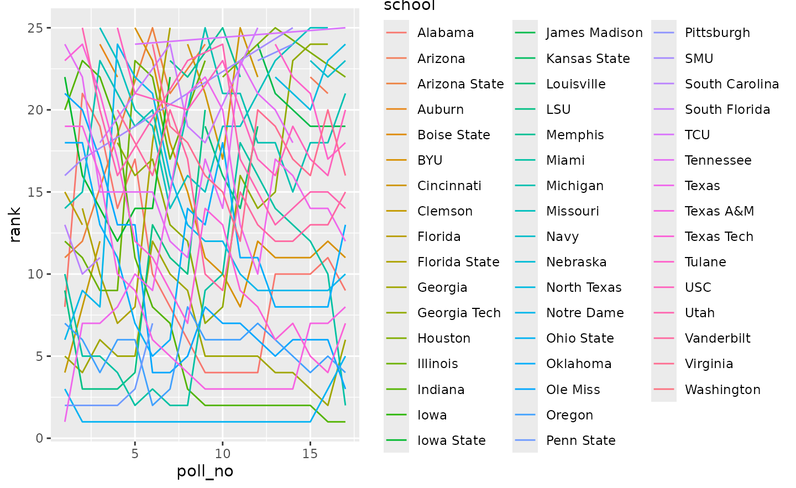
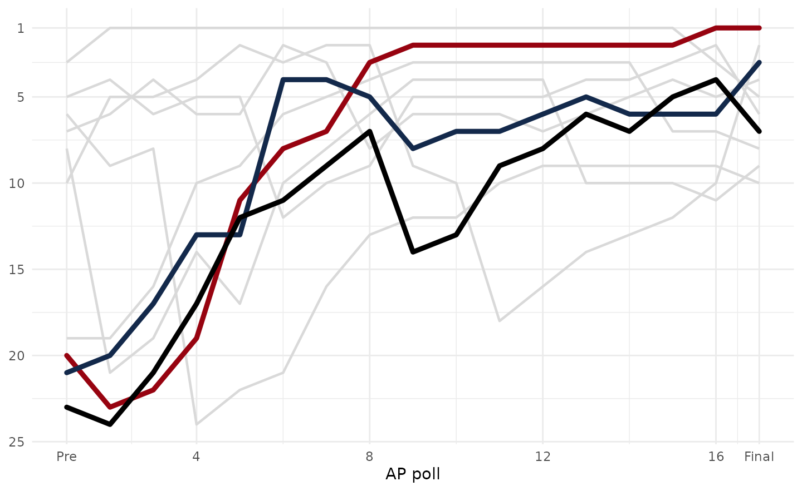
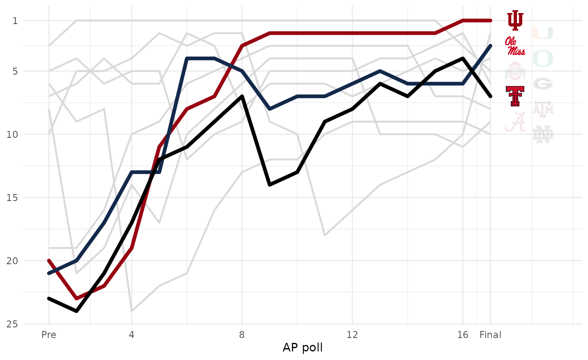
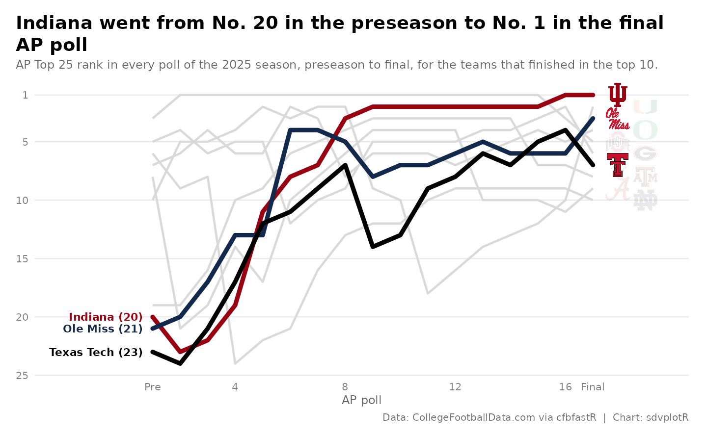

On this page
The brief: a season-review piece wants the whole
college football season in one picture: how the final top 10 of the AP
poll got there, poll by poll, with the teams that climbed most called
out and logos at the end of each line. It runs 1600 x 900 on the blog
and 1200 x 675 on X. The polls come from CollegeFootballData.com through
cfbfastR (its cfbd_*() functions need a free API key in
CFBD_API_KEY); ggplot2 draws the “bump chart” and sdvplotR
the logos and colors.
library(sdvplotR)
library(ggplot2)
library(dplyr, warn.conflicts = FALSE)
season <- 2025
out_dir <- tempfile("sdvplotR-recipe-") # where the exports go; use your own folder
dir.create(out_dir)1. Get the data
One row per team per poll. The AP poll comes out every week of the regular season (the first one is the preseason poll) and once more after the bowls; numbering the polls in order gives the x axis, with the final poll last.
ap <- cfbfastR::cfbd_rankings(year = season) |>
filter(poll == "AP Top 25") |>
mutate(poll_no = dense_rank(if_else(season_type == "postseason", 100L, week))) |>
select(poll_no, season_type, week, rank, school, points)
n_polls <- max(ap$poll_no)
count(ap, poll_no, season_type, week) |> head(3)
#> # A tibble: 3 × 4
#> poll_no season_type week n
#> <int> <chr> <int> <int>
#> 1 1 regular 1 25
#> 2 2 regular 2 25
#> 3 3 regular 3 25
n_polls
#> [1] 17
final <- filter(ap, poll_no == n_polls) |> arrange(rank)
preseason <- filter(ap, poll_no == 1) |> select(school, pre = rank)
final |>
slice_head(n = 10) |>
left_join(preseason, by = "school") |>
select(rank, school, pre)
#> # A tibble: 10 × 3
#> rank school pre
#> <int> <chr> <int>
#> 1 1 Indiana 20
#> 2 2 Miami 10
#> 3 3 Ole Miss 21
#> 4 4 Oregon 7
#> 5 5 Ohio State 3
#> 6 6 Georgia 5
#> 7 7 Texas Tech 23
#> 8 8 Texas A&M 19
#> 9 9 Alabama 8
#> 10 10 Notre Dame 62. The first draft
One line per team that was ever ranked, ggplot2’s defaults.

Spaghetti: 49 lines in near-identical hues, a legend nobody can match to them, No. 1 at the bottom, and a line drawn straight across the weeks a team dropped out of the poll, as if it had been ranked all along.
3. Flip it and pick the story
A poll reads top down, so the y axis is reversed, with a tick at every fifth spot. The chart keeps only the final top 10, which also removes the gaps: all ten were ranked in every poll (the check below confirms it), so every line is whole. The champion and the two biggest climbers from their preseason spots are drawn in their colors; the other seven are light grey for context.
Two teams in similar reds would read as one line, so each focus team’s color is checked against the ones already used and swapped for its secondary color when the two are too close.
top10 <- slice_head(final, n = 10)
paths <- ap |>
filter(school %in% top10$school) |>
select(school, poll_no, rank)
stopifnot(all(count(paths, school)$n == n_polls)) # ranked in every poll: no gaps to draw across
climbers <- top10 |>
slice(-1) |>
inner_join(preseason, by = "school") |>
mutate(climb = pre - rank) |>
arrange(desc(climb), rank) |> # the final rank breaks a tie in the climb
slice_head(n = 2)
focus <- c(top10$school[1], climbers$school)
distance <- function(a, b) sum(abs(grDevices::col2rgb(a) - grDevices::col2rgb(b))) / 255
colors <- c()
for (school in focus) {
pick <- sdv_team_colors("cfb", school)
if (any(vapply(colors, distance, numeric(1), b = pick) < 0.6)) {
pick <- sdv_team_colors("cfb", school, type = "secondary")
}
colors[school] <- unname(pick)
}
rbind(primary = sdv_team_colors("cfb", focus), used = colors)
#> Indiana Ole Miss Texas Tech
#> primary "#970310" "#13294B" "#DA291C"
#> used "#970310" "#13294B" "#000000"
poll_labels <- c("Pre", 4, 8, 12, 16, "Final")
lines <- list(
geom_line(
aes(group = school),
data = filter(paths, !school %in% focus), color = "grey85", linewidth = 0.8
),
geom_line(
aes(color = school),
data = filter(paths, school %in% focus), linewidth = 1.6, lineend = "round"
),
scale_color_manual(values = colors, guide = "none"),
scale_y_reverse(breaks = c(1, 5, 10, 15, 20, 25)),
scale_x_continuous(breaks = c(1, 4, 8, 12, 16, n_polls), labels = poll_labels)
)
ggplot(paths, aes(poll_no, rank)) +
lines +
labs(x = "AP poll", y = NULL) +
theme_minimal()
The last focus team’s red was too close to the champion’s crimson, so
it is drawn in its secondary color: the used row above.
4. Logos at the line ends
Every line ends with its team’s logo, in final-poll order, so the
right edge reads as the final top 10. The problem is room: ten teams
finish on ten neighboring rows, and a logo big enough to recognize is
taller than a row. So the logos alternate between two columns, odd ranks
nearer the line ends and even ranks one step further right, which gives
each logo two rows of height. width is a share of the
panel’s width. The three focus teams keep full-strength logos; the rest
are faded so the eye goes to the story.
ends <- top10 |>
mutate(
x = n_polls + if_else(rank %% 2 == 1, 0.9, 1.9), # odd and even ranks in two columns
alpha = if_else(school %in% focus, 1, 0.55)
)
logo_ends <- function(width = 0.04) {
list(
geom_sdv_logos(aes(x = x, y = rank, team = school, alpha = alpha), data = ends, sport = "cfb", width = width),
expand_limits(x = n_polls + 2.4)
)
}
ggplot(paths, aes(poll_no, rank)) +
lines +
logo_ends() +
labs(x = "AP poll", y = NULL) +
theme_minimal()
5. Tell the story
Each focus team gets a label where its climb began, in its color, to the left of the preseason poll so it never sits on a line; the x axis gets room for it. The title states the finding and the subtitle what the lines are.
champion <- top10[1, ]
champion_pre <- preseason$pre[preseason$school == champion$school]
starts <- paths |>
filter(school %in% focus, poll_no == 1) |>
mutate(label = paste0(school, " (", rank, ")"))
bump <- function(logo_width = 0.04) {
ggplot(paths, aes(poll_no, rank)) +
lines +
geom_text(
aes(label = label, color = school),
data = starts, hjust = 1, nudge_x = -0.35, size = 2.9, fontface = "bold"
) +
expand_limits(x = -2.2) +
logo_ends(logo_width) +
labs(
title = sprintf(
"%s went from No. %d in the preseason to No. 1 in the final AP poll",
champion$school, champion_pre
),
subtitle = paste0(
"AP Top 25 rank in every poll of the ", season,
" season, preseason to final, for the teams that finished in the top 10."
),
x = "AP poll", y = NULL,
caption = "Data: CollegeFootballData.com via cfbfastR | Chart: sdvplotR"
) +
theme_minimal(base_size = 10) +
theme(
plot.title.position = "plot",
plot.title = ggtext::element_textbox_simple(face = "bold", size = 14, margin = margin(b = 4)),
plot.subtitle = ggtext::element_textbox_simple(color = "grey40", size = 9, margin = margin(b = 8)),
plot.caption = element_text(color = "grey45", size = 7.5),
axis.title.x = element_text(color = "grey40", size = 9),
axis.text = element_text(color = "grey50"),
panel.grid.minor = element_blank(),
panel.grid.major.x = element_blank(),
plot.margin = margin(12, 14, 8, 12),
plot.background = element_rect(fill = "white", color = NA)
)
}
bump()
6. Export for the blog and X
The blog’s 1600 x 900 and X’s 1200 x 675 are both 16:9, so one 8 x 4.5 in plot serves both, saved at 200 and 150 dpi. Inches times dpi gives the exact pixels; the logos scale with their panel.
chart <- bump()
files <- c(
file.path(out_dir, "ap_poll_bump_1600x900.png"),
file.path(out_dir, "ap_poll_bump_1200x675.png")
)
ggsave(files[1], chart, width = 8, height = 4.5, dpi = 200)
ggsave(files[2], chart, width = 8, height = 4.5, dpi = 150)
magick::image_info(magick::image_read(files))[c("width", "height")]
#> # A tibble: 2 × 2
#> width height
#> <int> <int>
#> 1 1600 900
#> 2 1200 675
magick::image_read(files[1])